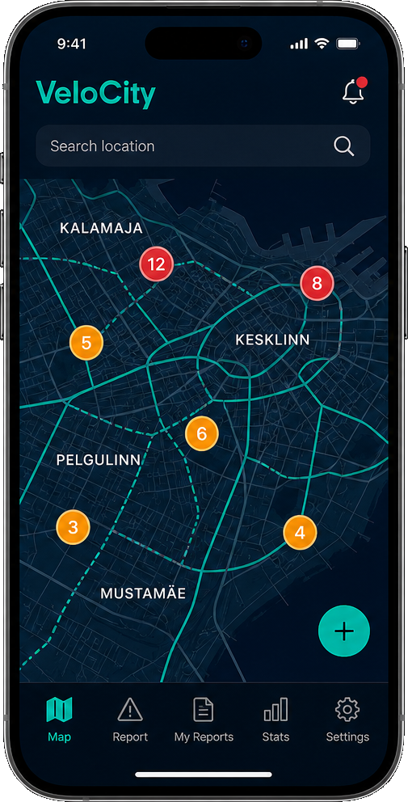
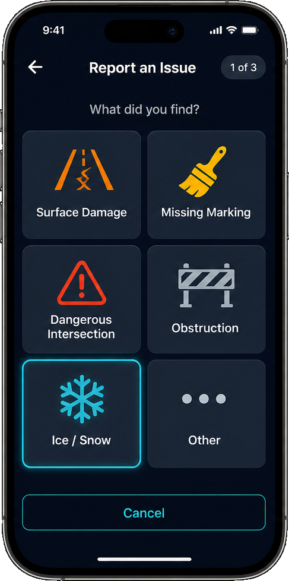
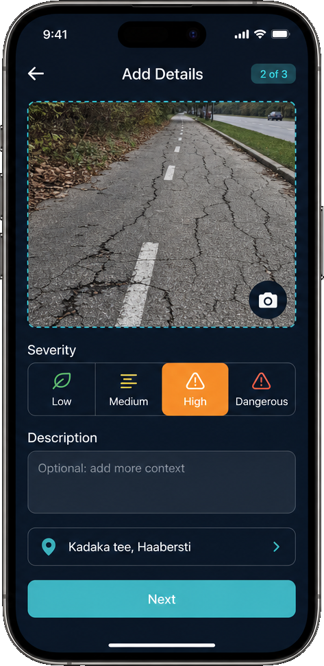
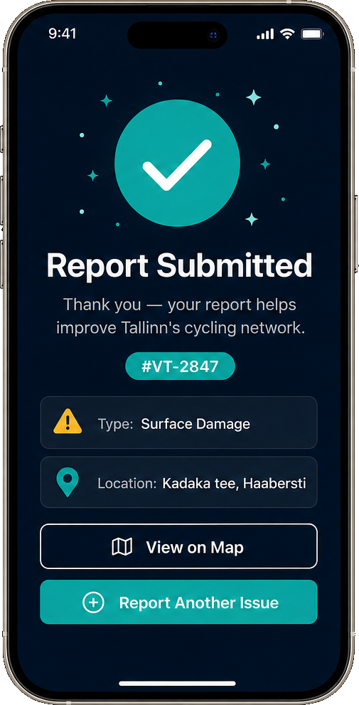
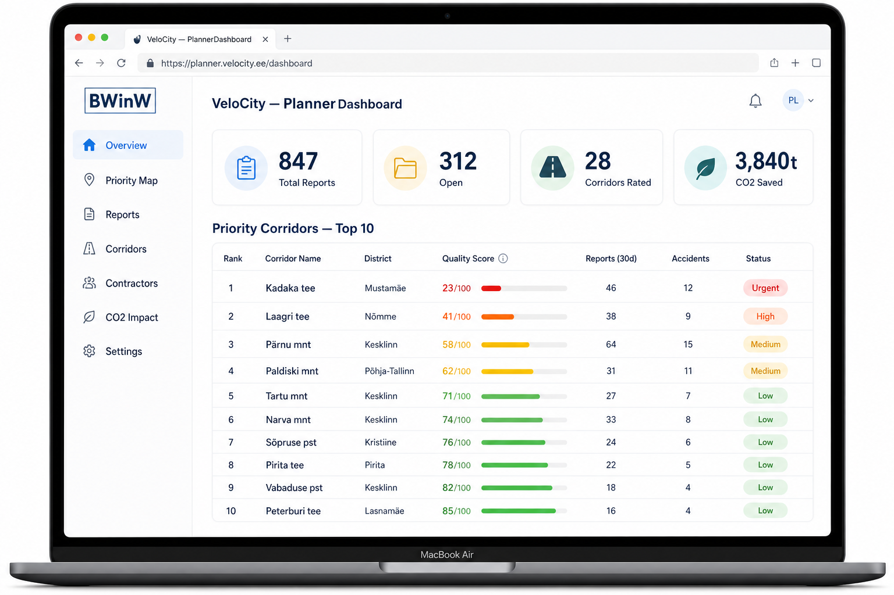
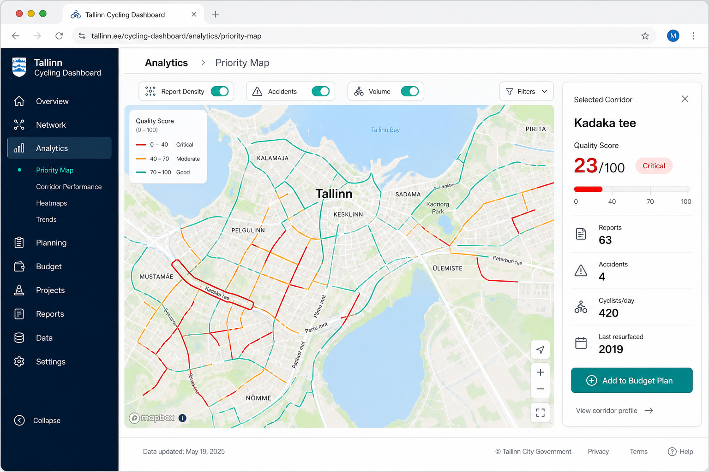
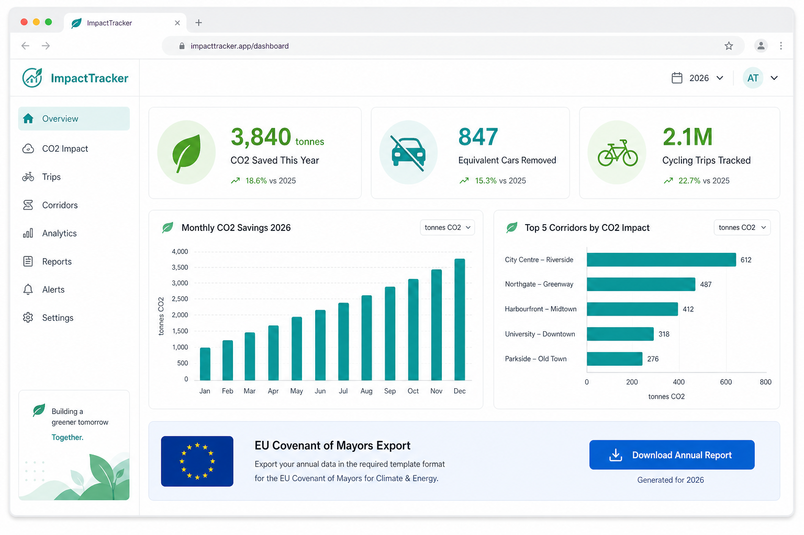

Built around reporting, prioritisation, and measurable climate outcomes.
Alpha-stage smart city product concept for Tallinn
See where cycling infrastructure needs attention before budget gets wasted.
VeloCity Tallinn gives the city a practical way to collect resident-reported cycling issues, cluster recurring problems, prioritise corridors, and communicate sustainability impact with transparent assumptions.
The product is positioned as a pre-MVP, grant-funded build: core architecture is defined, high-fidelity product mockups are ready, and the implementation plan is structured for MVP delivery and pilot execution.
- Citizen issue reporting with map pin, severity, and optional photo evidence
- Municipality dashboard with clustering, corridor scoring, and pilot-ready workflows
- CO2 and export-ready reporting layer aligned with public-sector sustainability narratives
Pilot scope
2-3 Tallinn corridors
Focused enough for a credible MVP validation.
Reporting fit
Fast, map-based issue capture
Built around the resident experience, not a generic complaint form.

Mockups, architecture, implementation plan, and realistic MVP roadmap are in place.
Funding is positioned to build the first working MVP plus a focused Tallinn pilot.
The architecture is localisable and designed for Baltic municipal expansion after Tallinn.
The problem
Tallinn needs better visibility between resident reality and infrastructure investment decisions.
Cycling infrastructure is expanding, but maintenance, safety, and route quality are still hard to assess in a structured way. Today, signals are scattered across calls, email, social media, inspections, and manual planning documents.
Fragmented issue reporting
Residents can report problems, but the signal rarely turns into consistent spatial data usable for planning, prioritisation, or public accountability.
Limited corridor-level prioritisation
Planners need to defend where budget goes. Without clustering, severity weighting, and repeat-pattern visibility, decisions can look reactive instead of evidence-based.
Weak climate storytelling
Cycling supports modal shift and emissions reduction, yet most cities still struggle to communicate impact in a way that is transparent, repeatable, and usable in reporting.
The platform
Three connected modules, one operational picture.
VeloCity Tallinn is designed so the city does not need three separate tools for reporting, planning, and sustainability communication. Each module can start simple, but together they create a much stronger pilot story.
CitizenReport
React Native app concept for iOS and Android with fast location-based issue reporting, winter categories, status updates, and public trust-building visibility.
PlannerDashboard
Municipality-facing web dashboard for clustering reports, ranking corridors, reviewing trends, and generating decision-ready views for maintenance and budget discussions.
ImpactTracker
CO2 estimation and reporting layer that helps the city communicate cycling impact in a way that stays understandable, auditable, and export-friendly.





For city operations
A credible municipal workflow, not just another civic app.
The dashboard is where the application becomes strategically interesting for Tallinn. Reports are not left as isolated tickets. They are grouped, scored, and surfaced in a way that helps planners explain why a corridor is urgent, why another can wait, and how repeated community feedback lines up with maintenance reality.
- AI-assisted clustering designed to be explainable rather than opaque
- Corridor quality scoring that can include density, severity, recency, and optional accident data
- Role-based workflow for planners, contractors, and pilot observers
- Exports for presentations, reviews, and public-sector reporting packs
For sustainability and policy
Climate impact is part of the story, but presented carefully.
VeloCity Tallinn does not pretend to deliver perfect emissions certainty. Instead, the concept positions CO2 estimation as a practical, transparent layer that helps the city communicate cycling value, pilot results, and broader sustainability relevance without overclaiming.
- Scenario-based assumptions rather than black-box metrics
- Readable annual dashboards for leadership and residents
- Export-oriented positioning for cities with similar SUMP and climate goals
- Useful bridge between mobility investment and sustainability reporting

Pilot and MVP
The funding narrative is focused: build a working MVP, then prove it on a small Tallinn pilot.
The application package positions the grant request around MVP delivery, not a fully finished production platform. That keeps the story ambitious but credible.
Architecture and design baseline
Lock UX flows, security assumptions, reporting taxonomy, and data structures for mobile, dashboard, and impact modules.
Mobile and backend MVP
Implement issue submission, map interaction, severity model, status visibility, API endpoints, and storage layer.
Planner dashboard and scoring
Launch clustered report views, corridor ranking, pilot workflows, and the first explainable prioritisation layer.
Impact layer and pilot execution
Add CO2 reporting logic, validate KPIs on 2-3 corridors, and produce a documented pilot outcome for future expansion.
Export strategy
Built for Tallinn first, but structured to travel to other Baltic municipalities.
The export plan positions Tallinn as the reference deployment, then uses configuration, localisation, and repeatable onboarding to support expansion into similar municipal contexts.
Tallinn
Anchor city and first reference case. Focus on pilot credibility, planner workflow fit, and a local smart-city narrative.
Tartu
Closest second-city expansion: similar digital patterns, strong cycling culture, and lower onboarding friction.
Riga
Higher revenue potential with more procurement complexity; suitable for a district-first or pilot-led entry.
Vilnius
Good fit for corridor prioritisation and winter-aware operations framing as cycling investment continues to grow.
What transfers well
GIS-driven corridor logic, dashboard flows, issue clustering, and reporting templates are designed to be reusable.
What needs localisation
Language, identity/access policies, GIS onboarding, and local public-sector documentation must be adapted city by city.
Why the grant story matters
A strong Tallinn MVP plus pilot evidence is the commercial proof point that makes export conversations realistic.
Product screens
Detailed visual package for the application materials.
The mockups below are concept visuals prepared for the grant package, supporting documents, and pilot conversations. They represent an early but credible alpha-stage product direction.
About BWinW
BWinW develops digital products and can credibly carry this from concept into MVP.
BWinW is an IT company focused on product development. The company delivers outsourced product work and builds internal products across education, manufacturing, banking, and infrastructure-related domains. VeloCity Tallinn is positioned as one of those internal product initiatives: a civic-tech platform with local pilot relevance and clear export potential.
This public page is a concept demonstration for grant, pilot, and stakeholder discussions. It does not collect live data and should not be presented as a finished production deployment.
Application-ready package
- Detailed project document in `.docx` with embedded mockups
- Separate export and market plan in `.docx` for the Tallinn submission portal
- Website visuals, dashboard preview, and reusable product narrative blocks